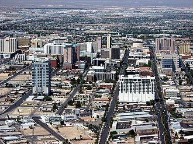

Exploring America, Beyond Borders, Beyond Expectations
Home | Destinations | Gallery | Contact
From the bustling streets of New York to the serene landscapes of Yellowstone, America offers endless travel adventures.
New York City, known as "The Big Apple," is a vibrant melting pot of cultures, cuisines, and iconic landmarks. From the towering Empire State Building to the bustling streets of Times Square, every corner of the city tells a story. The Statue of Liberty symbolizes freedom and welcomes millions of visitors each year. Whether you're admiring the skyline from the Brooklyn Bridge or strolling through Central Park, NYC offers an unforgettable experience.
Located in Arizona, the Grand Canyon is a mesmerizing natural wonder that attracts millions of tourists annually. Its vast landscapes stretch for miles, with layered red rock formations carved by the Colorado River over millions of years. The Skywalk at the West Rim offers a unique glass-bottomed view of the canyon.
California offers everything from sun-kissed beaches to lush forests. Visit Los Angeles, explore Yosemite National Park, or see the iconic Golden Gate Bridge in San Francisco.
Known for its glitz and glamour, Las Vegas is a city of endless entertainment. The Las Vegas Strip is lined with hotels, casinos, and world-class shows.
Miami is famous for pristine beaches, vibrant nightlife, and colorful culture. South Beach and Little Havana are must-visit attractions.
Chicago is known for its iconic skyline and Millennium Park, home to the famous Cloud Gate sculpture.
Spanning Wyoming, Montana, and Idaho, Yellowstone boasts geysers, hot springs, and diverse wildlife including the famous Old Faithful geyser.
Whether driving along the Pacific Coast Highway or Route 66, road trips allow you to explore hidden gems and scenic landscapes.

© 2025 Beyond Borders | All Rights Reserved